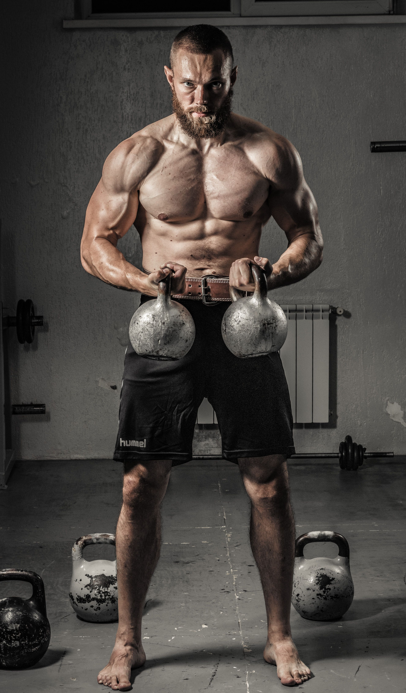
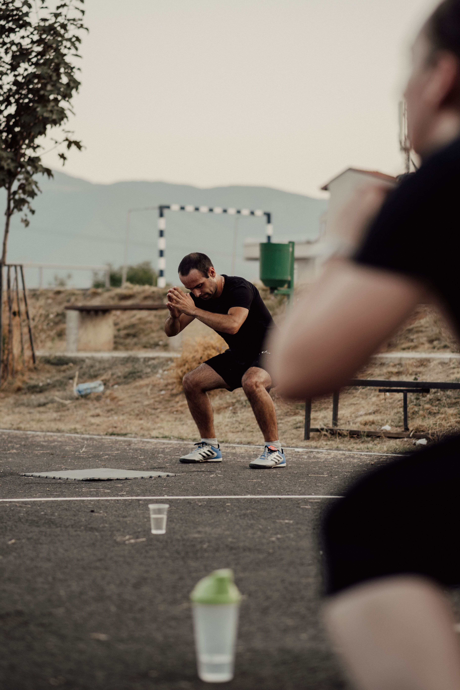

Workout Plans
Find training programs designed for beginner, intermediate, and advanced fitness levels. Learn exercises, workout splits, sets, reps, and ways to improve your performance.
View WorkoutsSTART YOUR JOURNEY
Welcome to Fitness Unity, your guide to building a healthier and stronger version of yourself. Whether you are just starting your fitness journey or have years of experience, our goal is to provide you with the information and resources you need to succeed.
Fitness is about more than just lifting weights or losing weight. It involves proper nutrition, consistent exercise, recovery, and building habits that support your overall health. Fitness Unity brings these important topics together in one place.
Explore Workout PlansFitness is about challenging yourself, staying active, and building healthy habits both inside and outside the gym.


Find training programs designed for beginner, intermediate, and advanced fitness levels. Learn exercises, workout splits, sets, reps, and ways to improve your performance.
View WorkoutsLearn about healthy eating, protein, vitamins, minerals, supplements, and balanced meal plans. Discover foods that help support your fitness goals.
Explore NutritionImprove your daily habits with information about sleep, hydration, recovery, physical activity, and maintaining a healthier lifestyle outside the gym.
Learn MoreUse our fitness calculators to estimate body fat percentage, calculate daily protein intake, and better understand your personal fitness goals.
Use Fitness ToolsEveryone starts somewhere. Some people want to build muscle, others want to lose body fat, improve strength, or simply feel healthier. No matter what your goals are, progress starts with consistency and patience.
At Fitness Unity, we believe fitness should be approachable, educational, and sustainable. Take your time, learn what works for your body, and remember that small improvements can lead to meaningful long-term results.